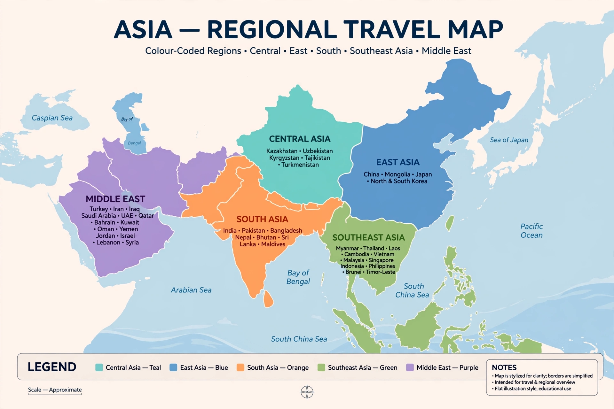

Asia
Asia is the world's largest continent, stretching from the Arctic to the equator and from Istanbul to Tokyo. Wikivoyage divides it into Central Asia, East Asia, the Middle East, Russia and the Caucasus, South Asia, and Southeast Asia, with guides to countries, regions and thousands of cities.

[Image: Map of Asia with Wikivoyage's travel regions colour-coded]
Destinations
Most-visited places include Bangkok, Singapore, Hong Kong, Dubai, Tokyo, Beijing, Delhi and Bali, alongside Silk Road cities and Himalayan trekking regions.
Practicalities
Asia spans many visa regimes, currencies and languages; country guides cover entry requirements, transport, food and etiquette in detail.